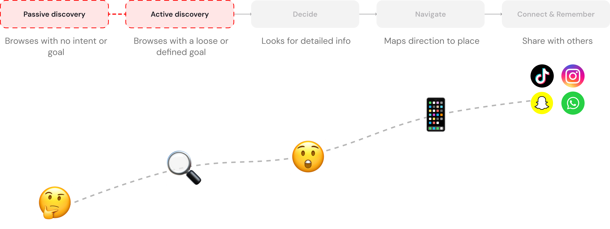
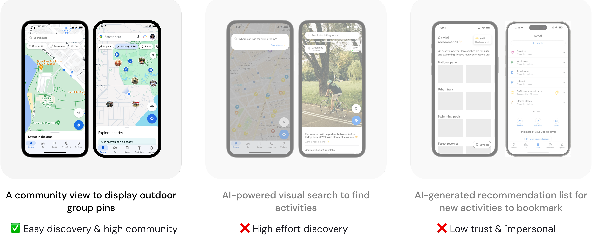
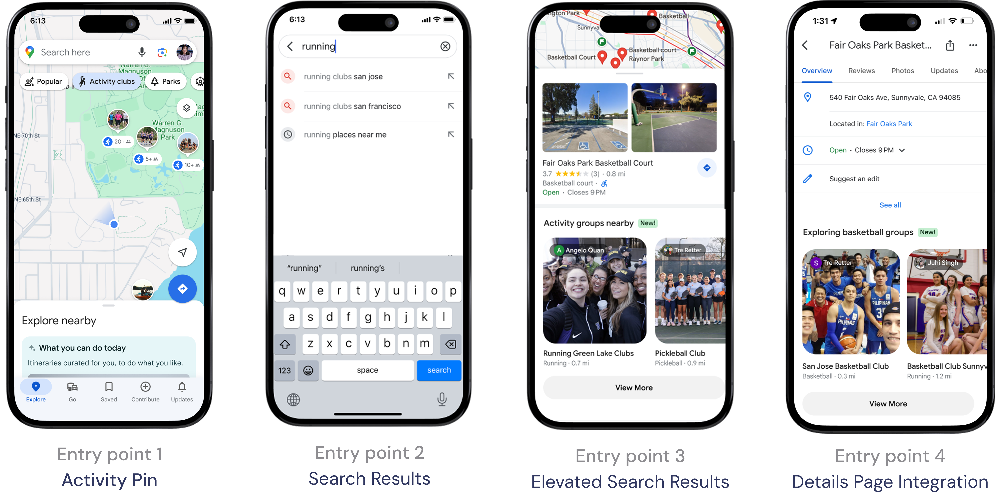
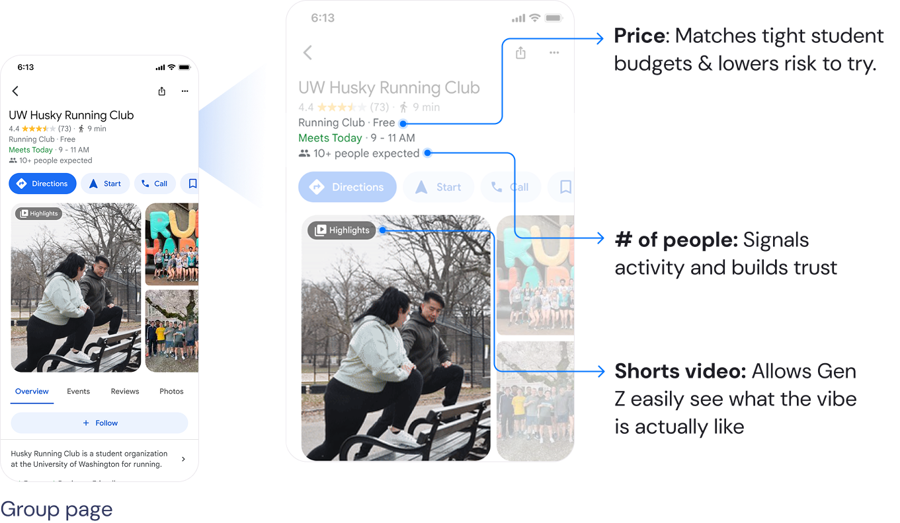
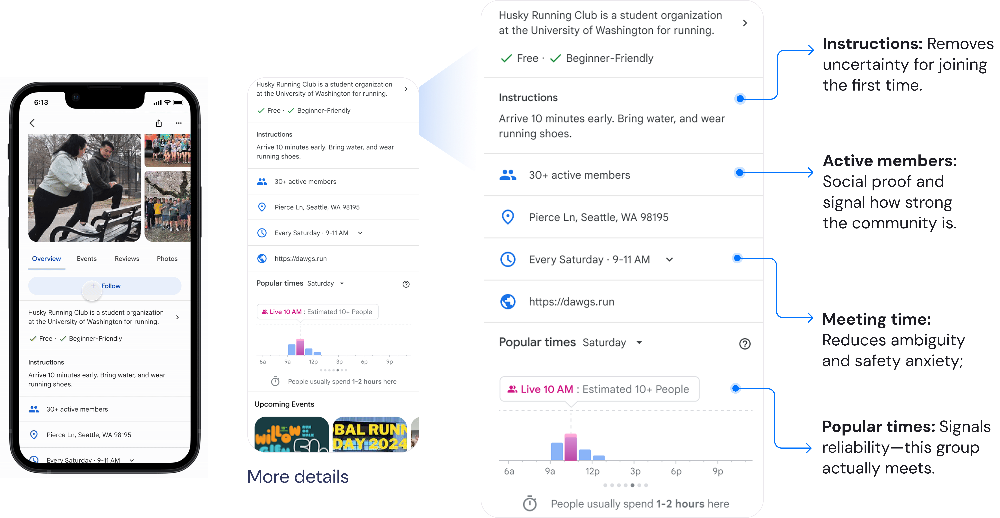
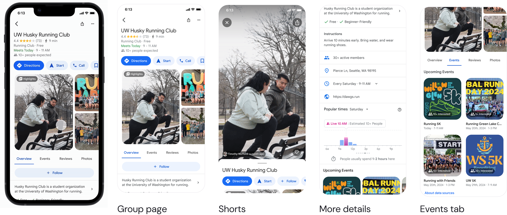
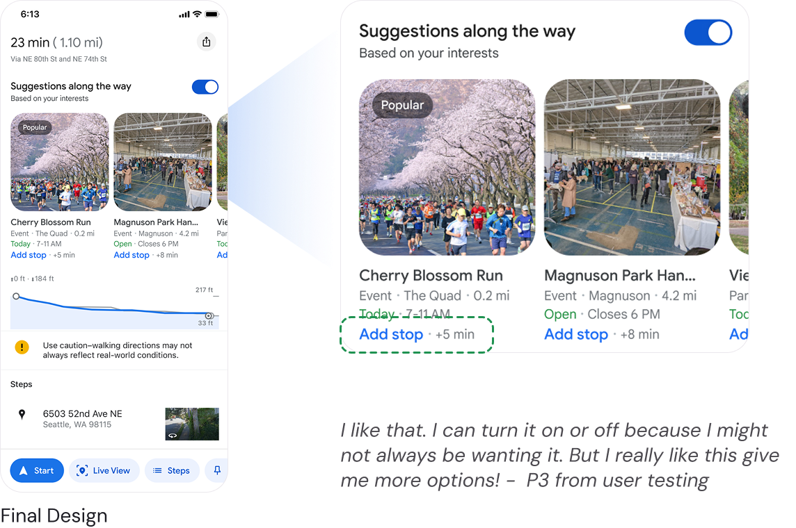
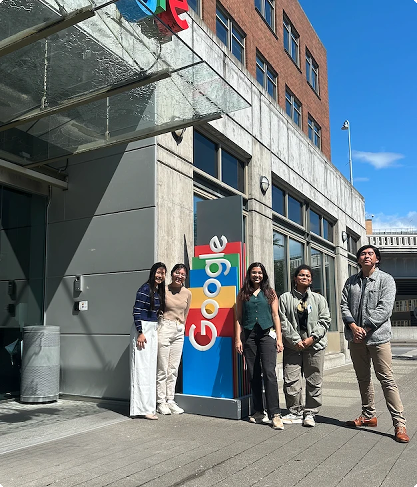

Google Maps for Gen Z
A Group Pin concept that helps Gen Z discover outdoor activity communities in new places — designed with the Google Maps team for my MS capstone.
Problem
Less than 10% of Gen Z use Google Maps to discover things to do — they turn to social media instead, and Maps surfaces places, not the communities around them.
My role
- Product designer on a 3-person MS capstone with the Google Maps team
- Led research synthesis and the majority of design solutions
- Designed high-fidelity iOS flows end to end
Solution
A Group Pin concept that surfaces outdoor activity communities on the map — built for easy discovery, real-time trust signals, and personalization.
Impact
- Concept validated with Gen Z users across the full journey
- Presented to the Google Maps team as a capstone direction
Overview
A capstone withthe Google Maps team
My master's capstone with the Google Maps team — a design manager and two senior designers — taking the project from research to design over six months. Research was shared; design was split by feature, and the work here is mainly my own.
Note: this used Google's design system from about a year ago, so Maps looks a little different today.
The opportunity
Discovery is the stageMaps was missing
Before jumping to solutions, we mapped the full Gen Z journey — passive discovery, active discovery, decide, navigate, and connect & remember. Google's internal data and our research then surfaced a clear gap: fewer than 10% of Gen Z use Maps to discover things to do. They turn to TikTok, Instagram, and Snapchat instead.
That pointed straight to an opportunity at the discovery stage — the part of the journey Maps was missing. Three reasons stood out for why it gets skipped:
01
Too much effort
Discovery takes active searching — Gen Z would rather stumble onto things.
02
Lack of trust
Reviews and photos feel unreliable next to authentic social content.
03
Generic content
Static listings feel impersonal and uninspiring compared to short-form video.

The challenge
Reframingthe ask
With discovery as the focus, we narrowed Google's broad ask into a sharper, more actionable problem.
The ask from Google Maps
"How might we create a more realistic map that better reflects the moment by introducing dynamic data in a way that benefits Gen Z communities?"
My reframe
"How might we provide Gen Z with real-time information to discover outdoor activity communities in unfamiliar places?"
Design goals
Design for discovery,trust, and personalization
Streamline discovery
Make finding communities feel effortless, not like a search task.
Build trust
Surface real-time signals that help Gen Z decide whether to join.
Deliver personalization
Tie discovery to the hobbies and interests people already have.
Design explorations
Taking inspiration fromsocial media and Gen Z
I explored three concepts, each borrowing from how Gen Z already discovers things, then weighed them against effort, trust, and community.

I focused on the community view — it made discovery easiest and felt genuinely community-driven. The AI search still demanded manual effort, and AI-generated lists felt less authentic, so the community view struck the right balance for Gen Z.
The solution
Group Pin,across three pillars
The concept brings outdoor communities onto the map through activity pins, and backs them with the trust signals and personalization Gen Z actually wants.
1 · Design for discovery
Research revealed discovery starts with existing hobbies, not random browsing — someone who plays basketball weekly moves and asks "how do I find a group here?" So I expanded entry points: an activity pin on the map, search results, elevated results, and integration on place detail pages.

2 · Design for trust — Surfacing the right details
To decide whether to join, Gen Z needs the right real-time data. I ran a card sort across nine metadata points; four rose to the top — frequency of meeting times, number of people, location, and contact info — and shaped the group profile around them.



3 · Design for personalization — Personalized discovery along the journey
Discovery is tied to what people already love to do — surfacing communities that match their interests and habits so the map feels made for them.

Impact and future directions
Gen Z loves it — many said they'd switch to Google Maps from competitors if these features were added.
"I'm an Apple user, but if Google Maps has this feature, I'll switch to Google Maps." — Gen Z UW student
"Congratulations on a job extremely well done! You left our team inspired… with your thoughtful, considerate, and iterative design proposal." — Staff UX Design Lead & Manager at Google

Reflection
What I learned
The biggest unlock was reframing the problem — discovery starts with the hobbies people already have, not random browsing. Designing to that motivation made the feature set feel genuinely useful.
What I'd do differently
I'd push a round of quantitative testing on the trust signals to confirm which real-time data actually drives the decision to join.